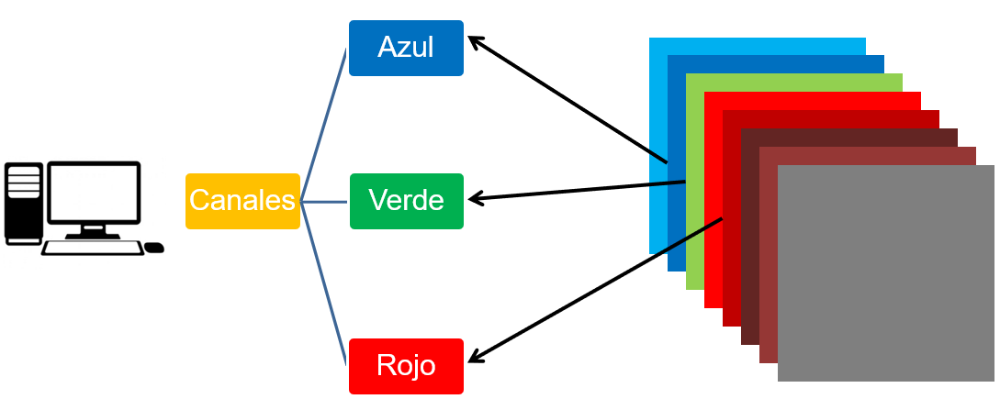
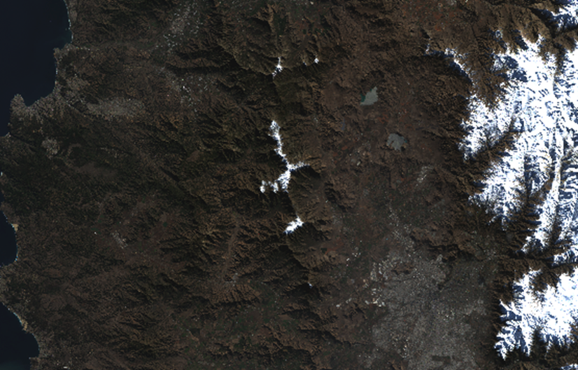
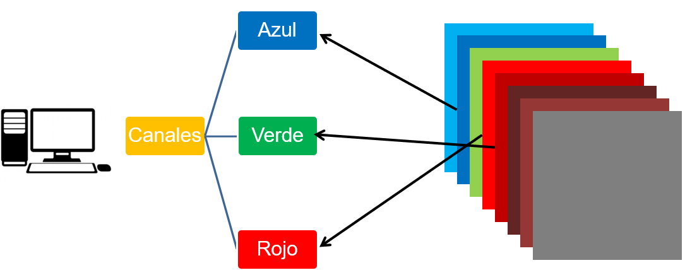
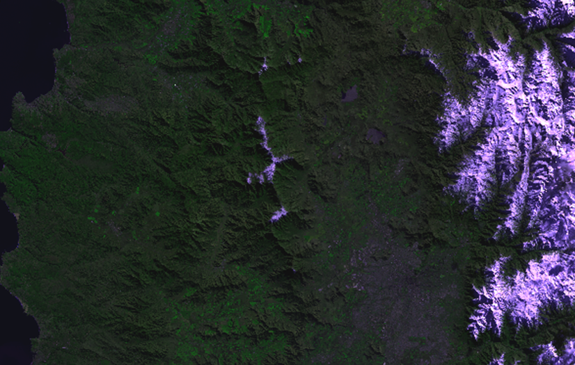
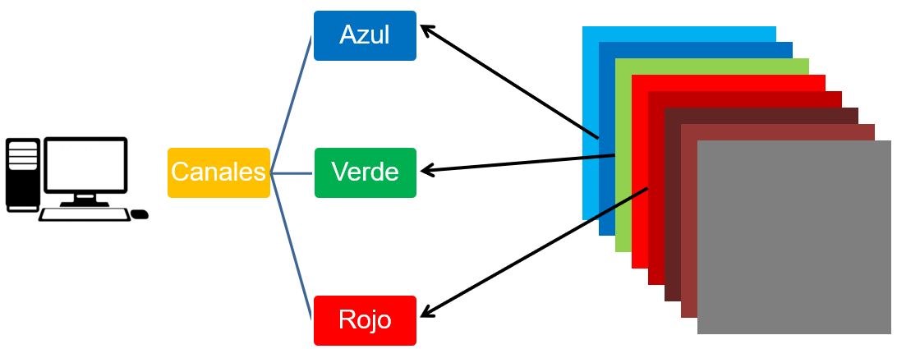
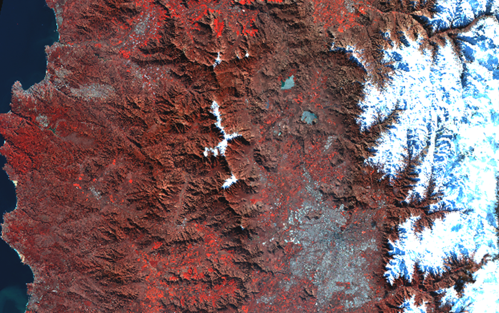

Las combinaciones de bandas nos permiten realzar visualmente elementos del paisaje que queremos destacar o identificar. Esto se basa en que debemos asignar alguna banda espectral a los canales de visualización de nuestro software. Estos canales son los conocidos RGB.
Hagamos un ejercicio teórico de como cambiaría la apariencia de una imagen si realizamos diferentes combinaciones de bandas en los diferentes canales RGB.:
Combinación Color Real R-G-B
Esta combinación, asigna las bandas de un satelite Azul, Verde y Roja, en los canales homónimos de nuestro software:

Ilustración: LabGRS

Combinación Falso Color R-NIR-B
Cuando hablamos de falso color, nos referimos a todas aquellas combinaciones de banda que no son en Color real (como el ojo ve). En este caso asignamos las bandas Azul y Roja en sus canales homónimos, y la banda Infrarroja (NIR: Near InfraRed) en el canal Verde. Recordemos que la vegetación tiene su peak de reflectancia en al longitud de onda del infrarrojo, por lo que ahora se visualizará la vegetación más verde que lo que observamos, ya que asignamos dicha banda al canal Verde.

Ilustración: LabGRS

Combinación Falso Color NIR-G-B
En este caso asignamos las bandas Azul y Verde en sus canales homónimos, y la banda Infrarroja (NIR: Near InfraRed) en el canal Rojo. Siguiendo la idea de que la vegetación tiene su peak de reflectancia en al longitud de onda del infrarrojo, ahora se visualizará la vegetación roja intenso , ya que asignamos dicha banda al canal Rojo.

Ilustración: LabGRS
